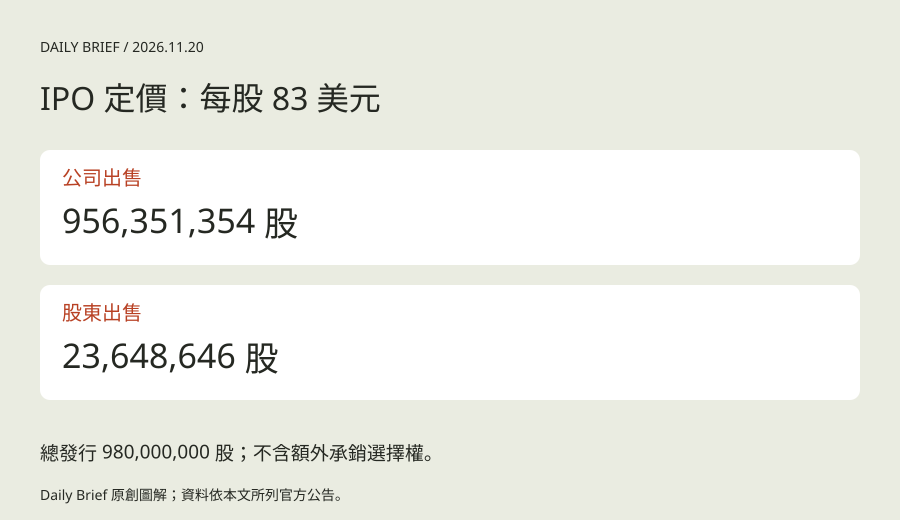

MARKETS / THE ESSENTIALS
Anthropic IPO 定價 83 美元，發行規模與首日股價分開看
收錄於 2026-11-20 日報 · Anthropic 官方 IPO 定價公告
已確認的進展
- Anthropic 11 月 18 日正式定價每股 83 美元，發行 980,000,000 股；其中公司出售 956,351,354 股、既有股東出售 23,648,646 股，公司不取得後者出售所得。
- 官方宣布註冊文件於 18 日生效，原訂 19 日於 Nasdaq 以 ANT 交易，預計 20 日完成交割，仍有慣常條件；承銷商另有 30 天、最多 147,000,000 股選擇權。
影響與限制
- 較 11 月 10 日路演已進展至正式定價與文件生效；本則只報發行條件，未核實首日成交及收盤，不將 83 美元當成即時市場報價，也不提供買賣建議。
後續更新：前期為路演與預估價格範圍；本次為正式 83 美元定價、980,000,000 股規模與註冊文件生效。

原文與查核
以上為整理與解讀，重要細節請回到原文核對。
- Anthropic 官方 IPO 定價公告 ↗發布 2026-11-18 · 查核 2026-11-20T05:21:19+08:00